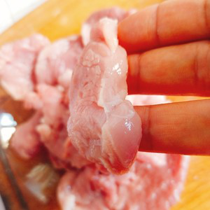

How to make Double Cooked Pork Slices?
The material prepared
Coffee beans 20g.
Boiled water 200g.
Production steps
Wash the tenderloin, drain the water from the kitchen paper, and cut it into 3mm thick slices, not too thin.

Water starch add water (the amount of water is not in the cube) stir, leave for one hour, then pour out the top layer of water, stir into batter, then put the meat into the batter, grasp until each piece of meat is covered with batter.
When we were waiting for the water starch we cut side dish, shred ginger, garlic slice, shred onion, cut parsley, carrots cut wire, and then the juice, the prescription of water, sugar, salt, vinegar, chicken essence, soy sauce, stir well, add a little starch here you can taste the taste is the taste of what you want to, if not that can do the adjustment. Put oil in the pot, 80% of the hot time under the meat, oil can not be less, meat can not be too much at a time, divided into many times Fried, or early and late under the meat maturity will have differences, affect the final taste, Fried meat with small fire can be, not easy to fry paste! The first time to fry after the oil temperature again to 80% hot, all the meat Fried again, do not more than two minutes, remove the oil temperature again to 80% hot, continue to fry again, time or not more than two minutes, otherwise it will be easy to fry too hard, bite!
Finally, put a little oil in the pot, onion, ginger, garlic, carrot, put in and stir-fry until fragrant, then put the good sauce into the fire to boil, then put the Fried meat into the pot and stir fry evenly, add cilantro can be out of the pot!